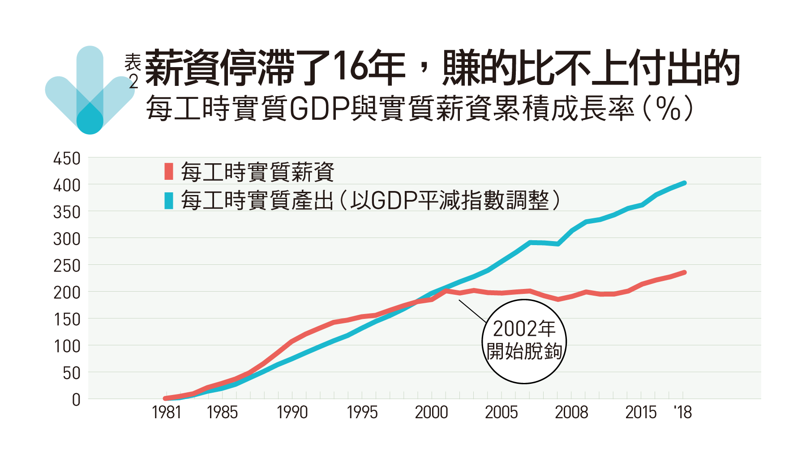

台灣，是一座由「中小企業」撐起的海島。手提一卡皮箱，全球跑透透的中小企業頭家們，挹注這座海島賴以為生的國際貿易與經濟發展命脈。「以前資本額8億台幣以上就算大企業，現在可能10億都不算大」中信金融管理學院教授施光訓說。
中小企業：佔出口比率大幅下滑
數字反轉背後，透露台灣不容忽視的企業面貌與產業結構的轉型。首先是金融市場變革的驅動力，允許企業藉由資本市場取得資本，中小企業逐漸走向大型化。
企業面貌變化背後，是哪些企業快速大型化？1990年代末期開始，電機設備與零件成為台灣主要出口產品，2003年之後超過30%，到2018年更達到43%。
企業利用廉價勞工成長，中國成長帶動中國薪資成長，台灣卻停滯了。
資通訊產業的創業第一代，靠著製造出口，讓企業長大。台灣過去20年，企業也靠運籌帷幄這塊肥沃的「中間財」。2019年第四季，台灣景氣轉佳，台商回來找人、找地，外商包括Google、微軟、亞馬遜也來台灣設研發中心。
勞動：長期失業與超時工作減少中
「過去20年大家跳過台灣直接去中國投資，現在想到台灣了，投資就是未來的效應，也可帶動薪資成長，」楊子霆說。
但特別要注意的是年輕人失業比例上升。主計總處人力運用調查報告中揭露，15至24歲的失業者裡，中長期失業者佔比持續上升。這也代表在台灣總體長期失業率下降的同持，年輕失業者卻也面臨長期失業的困境。（延伸閱讀：美中貿協簽署在即 專家看壞未來談判）

但是，2017年之後，我們可以看到，中國政府已經幾乎不提「中國製造2025」，對外言論和宣傳，變得比較低調。因為他們當初也沒料到，川普對中國的政策，會做到這樣的程度。
再看到勞工工作時數上，台灣勞動者過去最為人詬病的超時工作也有改善，稍微舒緩「過勞之島」的惡名。若以經濟合作暨發展組織的「美好生活指數」，將每週50小時工作時數作為長工時的門檻來看。
 註：實質薪資累積成長率：（當年數值／1981 年數值）﹣1，每工時實質產出為（名目GDP／受雇人員全年總工時×GDP 平減指數），每工時實質薪資為（名目薪資／受雇人員全年總工時×消費者物價指數）。
台灣「每週平均總工時達50小時以上」的比例，在歷經2000年第一波勞基法修正，規定每兩週總工時不得逾84小時，和2016年進一步改為單週工時不得逾40小時等，已從2000年的12.9%，降到2018年的5.9%。
若和國際比較，台灣的「每週經常工時50小時以上」比率，2016年為8%，優於同為亞洲國家日本的21.8%與韓國的20.8%。然而要推動台灣整體產業升級與環境軟硬體改善，政府是否有穩健的體質來進行國家轉型升級是關鍵。

財政：政府負債比上升，但仍可控
然而要推動台灣整體產業升級與環境軟硬體改善，政府是否有穩健的體質來進行國家轉型升級是關鍵。（延伸閱讀：經濟衰退來了嗎？2020年這項數據很關鍵）
負債比，代表政府一年要用多少所得，才能把累積的債還完。負債比愈低，代表政府能夠償債的能力較強。
台灣在1998年實施「兩稅合一」，調降金融營業稅率並延長租稅優惠等，導致政府歲入大幅下滑。後來調降營所稅、遺產稅及贈與稅稅率遺產及贈與稅新制上路，最高稅率由單一稅率10%改為累進稅率20%，遺產稅各級稅率門檻，遺產淨額5,000萬元以下者，稅率維持現行的10%。，政府財政赤字一路上飆。直到2014年之後推動財政健全方案和檢討補助與退休金制度等稍微改善。
台灣政府的負債比雖然較20年前高，但放在國際標準來看，仍很健康。
台灣政府債務結構相較國外，最特殊之處就是皆為國債而無外債，外匯存底豐厚甚至可以借錢給其他國家。台灣政府零外債的結構，躲過1997亞洲金融風暴。相較台灣，外債高的韓國當年就受到極大影響。
以亞洲國家來看，台灣已算是資優生
國家需要適度舉債發展。美國政府舉債超過80%，日本超過200%，新加坡政府也是超過100%，以新加坡政府來說，就是利用負債來帶動國家經濟發展。
如果人民要求政府維持低負債，又不要收稅或提高稅率，那政府無法做事，也不能推動基礎建設，吳文傑認為，維持財政紀律的同時，也要兼顧國家持續的發展。
註：實質薪資累積成長率：（當年數值／1981 年數值）﹣1，每工時實質產出為（名目GDP／受雇人員全年總工時×GDP 平減指數），每工時實質薪資為（名目薪資／受雇人員全年總工時×消費者物價指數）。
「台灣經濟差不多到一個轉型的點，人民更在意的是有幸福感的經濟發展，」施光訓說。展望未來20年，台灣經濟發展站上一個新拐點：一個由中大型企業驅動的出口型海島經濟，更期盼新投資、新建設，往高附加價值的一端走。
薪資：生產力、經濟成長未帶動漲薪
台灣在2002年之前確實如此，但2002年後，代表勞工生產力的「實質GDP」雖然持續成長，但代表人民購買力的「實質薪資」卻陷入16年的停滯。

中研院經濟所助研究員楊子霆分析，2002年後代表「生產品價格」的GDP平減指數下滑，代表「消費品價格」的消費者物價指數（CPI）卻一路上升，差距逐年擴大，代表過去16年台灣生產力雖然成長，但生產的產品卻愈來愈便宜。（延伸閱讀：台灣變好或變壞？台灣第一家資訊數據設計公司：答案在100組數據裡）
不能忽略中國崛起的因素
2001年中國加入WTO，關稅優惠待遇推升中國成為世界工廠，包括台商在內的資通訊代工業西進，利用中國廉價勞動力成長，帶動中國崛起的同時，也壓抑了台灣企業在台灣該落實的技術升級與員工調薪。
中國進入了台灣擅長的代工製造領域，發動紅海式的低價競爭。台灣出口商品價格逐年下跌，代表生產力雖然提升，卻都是奠基在生產愈來愈低價的產品上。
展望未來20年，台灣經濟發展站上一個新拐點：一個由中大型企業驅動的出口型海島經濟，更期盼新投資、新建設，往高附加價值的一端走。

數字反轉背後，透露台灣不容忽視的企業面貌與產業結構的轉型。首先是金融市場變革的驅動力，允許企業藉由資本市場取得資本，中小企業逐漸走向大型化。
資通訊產業的創業第一代，靠著製造出口，讓企業長大。台灣過去20年，企業也靠運籌帷幄這塊肥沃的「中間財」，撐起台灣的經濟發展。2019年第四季，台灣景氣轉佳，台商回來找人、找地，外商包括Google、微軟、亞馬遜也來台灣設研發中心。（責任編輯：吳凱琳）